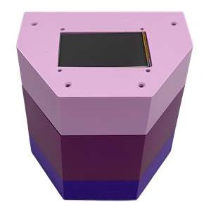
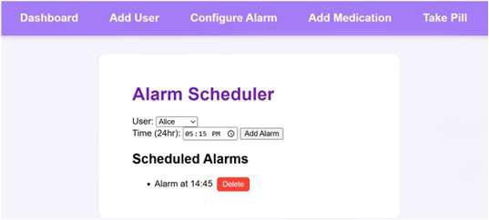

01 — Problem
Why It Matters
ADHD affects short-term memory and focus, which makes routines like taking medication on time hard to keep. ADHD medication has strict dosing and refill schedules. A missed dose disrupts the whole day, and taking too much can raise blood pressure and strain the heart.
Women are often diagnosed later in life, so they're less used to strict medication routines, and many are also managing jobs and families. A reminder that's hard to ignore, and a log of what's actually been taken, makes a real difference.
02 — System overview
At a Glance
Housing
Hexagonal PLA enclosure with five pill-bottle slots, each held by a flexible TPU retention cap.
Alerts
An LED and button beside each bottle, plus a buzzer for sound. The LCD shows what's been taken and when the next dose is due.
Software
The Raspberry Pi hosts a Flask web app for adding users and medications, setting alarms, and tracking doses remotely.
Power
5 V Li-ion batteries make it portable, with a power cord for charging at home.
03 — Build
Hardware & Wiring
I soldered and assembled all of the electronics: the Raspberry Pi, the LCD over HDMI, five buttons and LEDs on 3.3 V, and the buzzers, all wired into the printed housing.



04 — Verification
Testing Against Design Criteria
| Criterion | Test | Target | Result |
|---|---|---|---|
| Reminder effectiveness | 22 users rated alerts at distances up to 15 m | ≥ 3 / 5 | 4.36 / 5 |
| Pill-logging reliability | Each of 5 buttons pressed 100×, LCD checked | ≥ 95% | 95–98% |
| Wireless range | Settings changed from a phone at increasing distance | ≥ 10 m Wi-Fi, ≥ 5 m hotspot | 13 m / 8 m |
| Bottle retention | 2 bottle sizes inserted & removed 25× per slot | Cap stays intact | All 5 slots |
| App usability | 12 users rated ease of use | ≥ 4 / 5 | 4.25 / 5 |
05 — Roadmap
Next Iterations
- Custom sounds: replace the buzzer with a speaker so users can choose alerts that actually get their attention.
- Family use: connect several devices so a household can manage medications together.
Team: L. Leininger, E. Samborski, A. Gupta, A. Misra, A. Kathapurkar.